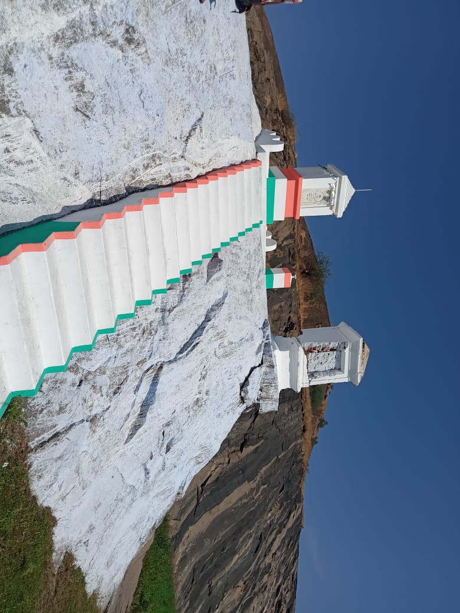
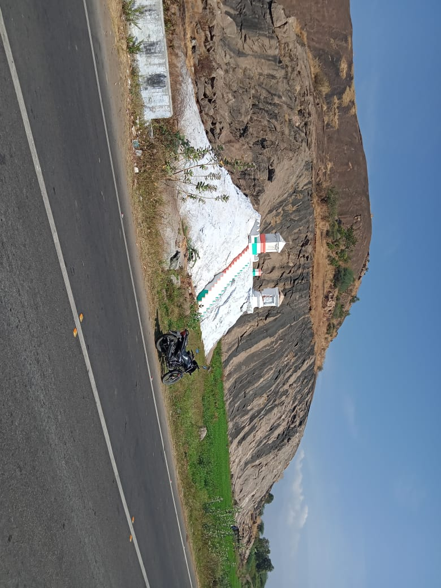
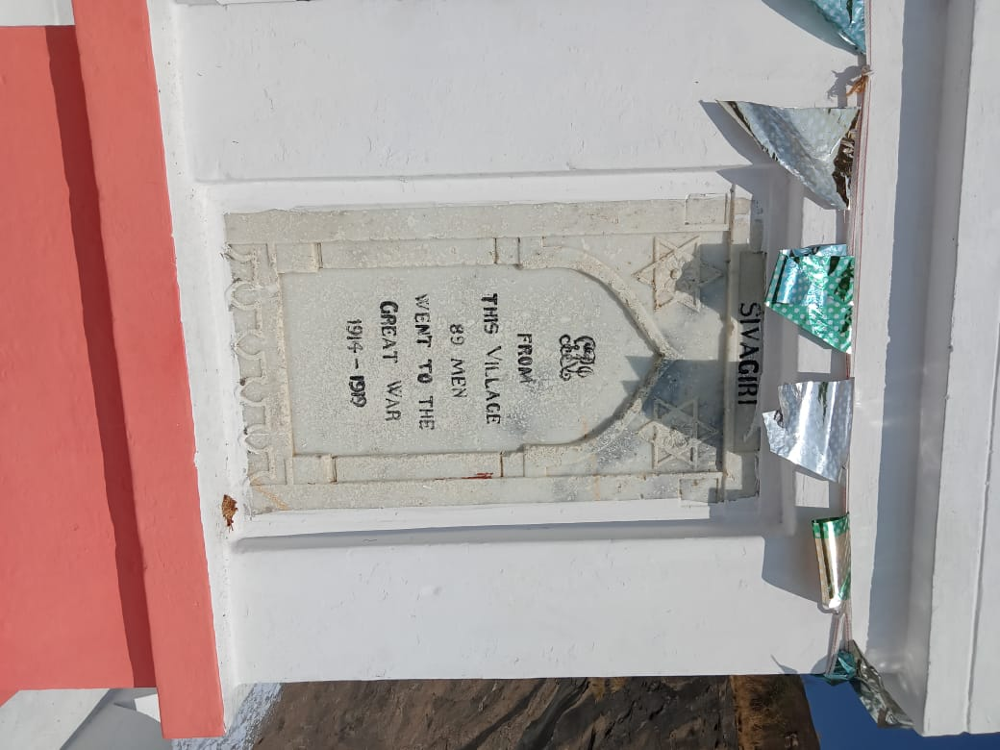
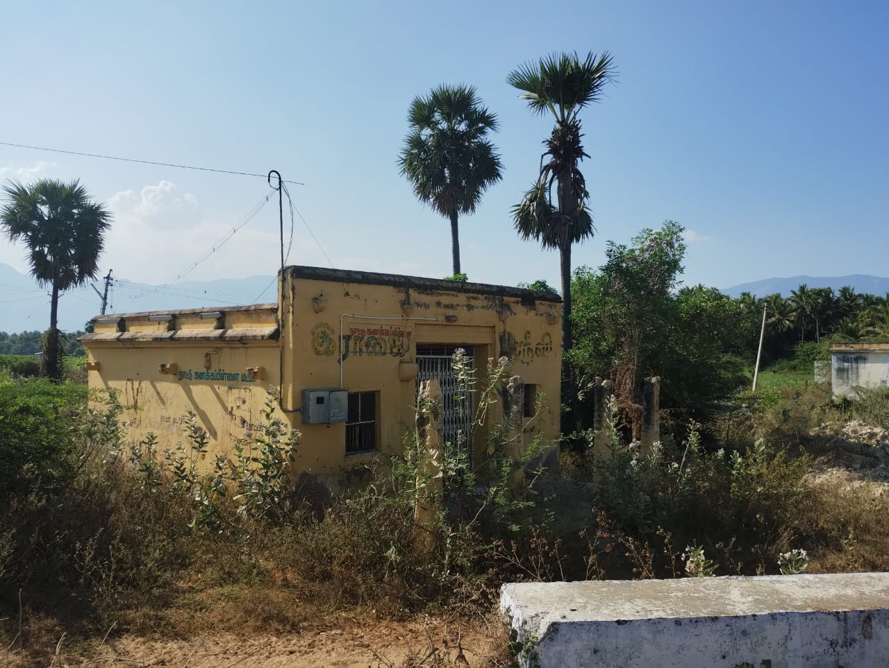
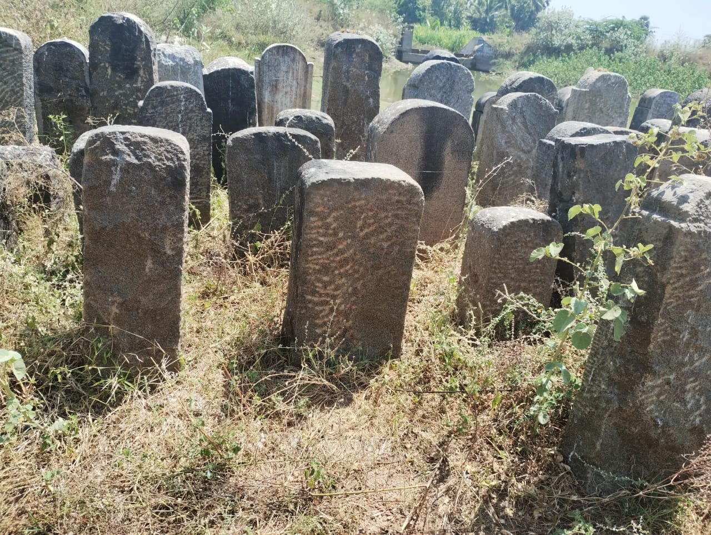

Sivagiri



We all know , The First World War was fought from 1914-1918 between Allied and Central powers. The major allied powers in WWI were Great Britain, France and The Russian empire. America entered the war in 1917. Germany, Austria- Hungary, Turkey formed Central Powers during the First World War. This was we studied or heared in history. Can we think anything about how Indians were involved in that war ? yes ,India was indirectly participate in the first world war under the British army.The example for this statement was found on SIVAGIRI (currently in Tenkasi district).In the entrance of this village, a small mountain was there .on that mountain a small memorial block was built to tribute the soldiers of this village who involved in first world war.As per record , 89 men from this village was participated in that war . A Huge notifying fact is ,we all know the first world war was end in 1918.In that block , It was denoted the war was ended in 1919. According to the people in that village, few members were returned after one year of the war.so at that time, they considered the war was ended in 1919.
Back to top
Seithur


Seithur, a small town near Sivagiri (currently in virudhunagar district).This village was considered as the headquarters for various kings like pandyas , Nayakas, palayakars and zamindars. Because,this area was very much rich in natural wealth and lot of water bodies. This village was also called 'sangalitham'(means maths).As per the related verification, this village was a meeting place for ''kanaku pillai's " .The meeting was held thrice in a year. This culture was followed even after independence. It was followed by the zamindar of this village.
Back to top
Varaguna Pandiyan

Veera sadayavarman parakrama pandian or( varaguna pandiyan) was a well-known king of later pandiyas . During his period ,the pandiyan dynasty was under the shadow of vijayanagar empire. His arrogance slightly urge the vijayanagar empire to be back ,and made him as a semi-independent ruler.As per records,he was the founder of tenkasi Kasi viswanathar temple as well as tenkasi pandiyas. First he was ruled in Madurai, later moved to korkai and at last moved he came to vindhan kottai.At that time , vindhan kottai was the capital of varaguna pandiyan (Now ,it was a small village).At vindhan kottai , there was lot of samples for associating this was the capital of tenkasi pandiyas. Samples like water ditch, broken palace wall ,etc.
Apart from this ,a hero stone was found. That stone was slightly different from other hero stones.Because it was not a memorial to any soldier.It was a tribute to the soldiers, who was in the mission of palace security.
Back to top
Hero Stone

Hero stones means a big tribute /memorial to the soldier or a sacrifier.Hero Stones, which are popularly found in many areas of Tamil Nadu are memorial stones erected in the
ancient days in memory of a hero who had laid down his life for a noble cause. These slabs or stones are
usually found on the outskirts of small towns and villages and the people of these areas, usually the family
members of the deceased hero, worship these memorial stones with flowers and Kumkum.An example for this statement is found on our south tamilnadu near srivilliputhur.
This culture was mentioned In Agananooru.
That was followed as,
அகநானூறு::
மரம் புல்லென்ற முரம்பு உயர் நனந்தலை,
அரம் போழ் நுதிய வாளி அம்பின்,
நிரம்பா நோக்கின், நிரயம் கொண்மார்,
நெல்லி நீளிடை எல்லி மண்டி,
நல் அமர்க் கடந்த நாணுடை மறவர்
பெயரும் பீடும் எழுதி, அதர்தொறும்
பீலி சூட்டிய பிறங்கு நிலை நடுகல்
வேல் ஊன்று பலகை வேற்று முனை கடுக்கும்
மொழி பெயர் தேஎம் தருமார்..
பொருள்::
அவர் செல்லும் வழியில் இலை உதிர்ந்து பறைந்துபோன மரங்கள் இருக்கும். நிலம் முரம்பு பட்ட கட்டாந்தரையாக இருக்கும். அங்கு வாழும் மறவர்கள் நிரம்பாத மனத்துடன் நரகம் அடைந்தவர் போலப் பிறரைப் பார்ப்பார்கள். அரத்தால் தீட்டிய அம்புடன் பார்ப்பார்கள். நெல்லிமரக் காட்டில் பகலெல்லாம் பார்த்துக்கொண்டிருப்பர். அங்கே நடுகல் கோயில் இருக்கும். அந்தக் கோயிலில் போரில் வென்று மாண்ட ஒவ்வொரு மறவனுக்கும் அவனது வேலை ஊன்றி அவன் பயன்படுத்திய வில்நாண் கயிற்றால் அவனது கேடயத்தைக் கட்டி மாட்டியிருப்பர். அது பகைவர் படை தாக்க வருவது போலத் தோற்றமளிக்கும்
அவர் செல்லும் வழியில் இலை உதிர்ந்து பறைந்துபோன மரங்கள் இருக்கும். நிலம் முரம்பு பட்ட கட்டாந்தரையாக இருக்கும். அங்கு வாழும் மறவர்கள் நிரம்பாத மனத்துடன் நரகம் அடைந்தவர் போலப் பிறரைப் பார்ப்பார்கள். அரத்தால் தீட்டிய அம்புடன் பார்ப்பார்கள். நெல்லிமரக் காட்டில் பகலெல்லாம் பார்த்துக்கொண்டிருப்பர். அங்கே நடுகல் கோயில் இருக்கும். அந்தக் கோயிலில் போரில் வென்று மாண்ட ஒவ்வொரு மறவனுக்கும் அவனது வேலை ஊன்றி அவன் பயன்படுத்திய வில்நாண் கயிற்றால் அவனது கேடயத்தைக் கட்டி மாட்டியிருப்பர். அது பகைவர் படை தாக்க வருவது போலத் தோற்றமளிக்கும்
Back to top
Back to top
Unavu Mandapam


In unavu mandapams(temperory buildings) were used as a 'DHARMA SATRAM' -to provide food for the people ,and acts as a decision making place for the local peoples.This architecture was slightly different from the idincha mandapam architecture.
மணிமேகலை
(உலக அறவி புக்க காதை)
பத்தினிப் பெண்டிர் பாத்தூண் ஏற்ற பிச்சைப் பாத்திரப் பெருஞ்சோற்று அமலை
அறத்தின் ஈட்டிய ஒண்பொருள் அறவோன் திறத்து வழிப்படூஉம் செய்கை போல
வாங்குகை வருந்த மன்உயிர்க்கு அளித்துத் தான்தொலைவு இல்லாத் தகைமை நோக்கி,
யானைத் தீநோய் அகவயிற்று அடக்கிய காயசண் டிகைஎனும் காரிகை வணங்கி
நெடியோன் மயங்கி நிலமிசைத் தோன்றி
அடல்அரு முந்நீர் அடைத்த ஞான்று குரங்குகொணர்ந்து எறிந்த நெடுமலை எல்லாம்
அணங்குஉடை அளக்கர் வயிறு புக்காங்கு இட்டது ஆற்றாக் கட்டழல் கடும்பசிப்
பட்டேன் என்தன் பழவினைப் பயத்தால்
அன்னை கேள்நீ ஆர்உயிர் மருத்துவி துன்னிய என்நோய் துடைப்பாய் என்றலும்,
பொருள்::
ஆதிரை என்னும் பத்தினி தன் உணவைப் பிச்சைப் பாத்திரத்தில் இட, அறவழியில் ஈட்டிய பொருள் அறவோன் கை வழியே செலவிடப்படுவது போல, உணவினை உண்ண வாங்குபவர் கை வாங்க முடியாமல் வருந்திற்றே தவிர பாத்திரத்திலிருந்து உணவு குறையாமலிருந்தது.
அதனை வாங்கி உண்ட காயசண்டிகை கூறலானாள். என் வயிற்றில் யானைத்தீ என்னும் பசி இருந்தது.
நெடியோன் திருமால் நிலத்தில் இராமனாகத் தோன்றி இலங்கைக்குச் செல்ல கடலை அடைத்தபோது குரங்குகள் மலைகளைக் கொண்டுவந்து கடலில் போட்டன. அந்த மலைகள் எல்லாம் இலங்கையைக் காக்கும் அரக்கி தெய்வத்தின் வயிற்றில் புகுந்து மறைந்தது போல நான் உண்ட உணவெல்லாம் ஒன்றுமில்லாமல் போய் பசி தணியாமல் இருந்தேன். இது என் பழையவினைப் பயத்தால் நேர்ந்தது. மணிமேகலை அன்னையே! உயிர் மருந்து தந்து காப்பாற்றும் மருத்துவிச்சியே! நான் அடைந்துள்ள நோயைத் தீர்க்க வேண்டும் என்று சொல்லி மணிமேகலையைக் காயசண்டிகை வேண்டினாள்.
மணிமேகலை தான் ஏந்திய பாத்திரத்திலிருந்து உணவை எடுத்துக் காயசண்டிகை கையில் போட்டதும், வயிற்றைக் காய்ச்சிக்கொண்டிருந்த பசியிலிருந்து காயசண்டிகை நீங்கி மணிமேகலையைத் தொழுதாள்.
Back to top